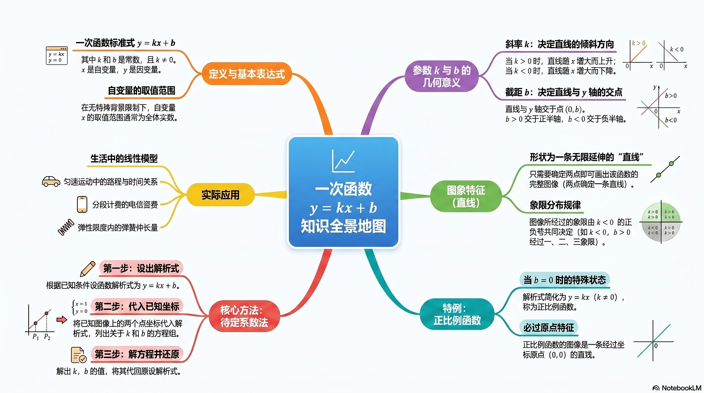
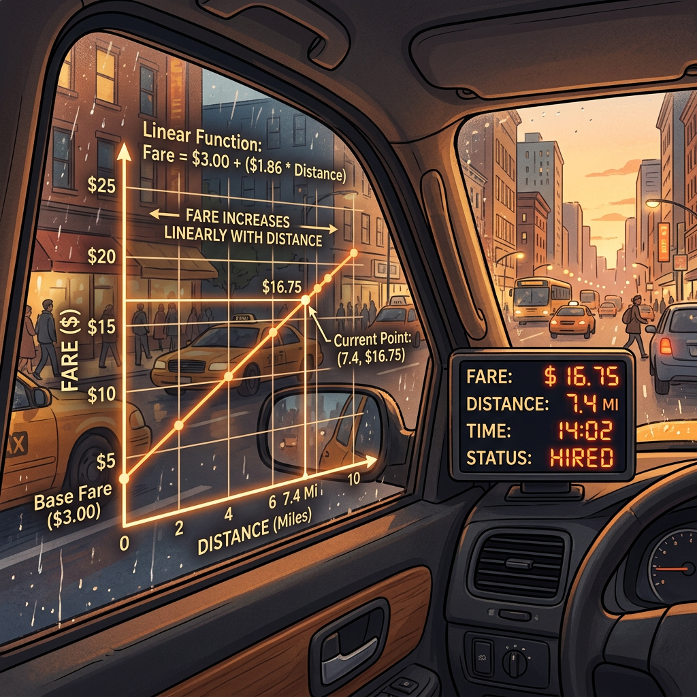

用一条直线描述世界的变化规律

正比例函数 y=kx（k≠0）的图像是什么形状？过哪个特殊点？
点 (0, 3) 在坐标系的什么位置？
And 你已经会用 y=kx 描述"单价×数量"这类正比例关系了。
But 乘坐出租车时，费用不只是"里程×单价"——还有一笔"起步价"！手机话费也不只是"通话分钟×单价"——还有"月租费"！这些费用用 y=kx 描述不了。
Therefore 我们需要一种新的函数：既能表示"按量计费"的部分，又能加上"固定费用"——这就是一次函数 y=kx+b。
💡 记忆锚点：k 是坡度，b 是起点。就像爬山——k 决定坡有多陡，b 决定从哪个高度出发。正比例函数是"不收起步价"，一次函数是"有起步价"。
| 对比项 | 正比例函数 y=kx | 一次函数 y=kx+b |
|---|---|---|
| 条件 | k≠0，b=0 | k≠0，b 为任意实数 |
| 图像 | 过原点的直线 | 直线（不一定过原点） |
| 关系 | 正比例函数是 b=0 时的一次函数（特殊情形） | |
下面哪些是一次函数？
And 你知道正比例函数 y=kx 的图像是一条过原点的直线，只要再找一个点就能画出。
But 一次函数 y=kx+b 不过原点了，怎么画？
Therefore 用"两点法"：分别令 x=0 和 y=0，找到直线与两个坐标轴的交点，连起来就是。
拖动滑块改变 k 和 b 的值，观察直线如何变化
拖动上面的滑块，填写你的发现：
我观察到：
我的猜想：
用两点法画 y = 2x - 4 的图像，应选取哪两个点？
And 你会画一次函数的图像了。
But 光会画还不够——你能从图像"读出" k 和 b 是正还是负吗？给你 k 和 b 的符号，你能画出大致图像吗？
Therefore 理解 k 和 b 的几何意义，就能在"式"和"图"之间自由切换。
💡 记忆口诀：k 是坡度——正数上坡，负数下坡。手指从左往右划，k>0 手指往上抬，k<0 手指往下落。
⚠️ 常见错误：b 是"纵截距"，不是与 x 轴的交点！令 x=0 得 y=b，所以交点是 (0,b)。
调整 k 和 b，观察直线经过哪些象限
小明说："y=-2x+3 的图像从左到右上升，与 y 轴交于 (3,0)。"他说对了吗？
And 你已经理解了 k 和 b 怎么影响图像。
But 如果只告诉你直线经过哪两个点，你能反推出 y=kx+b 的具体表达式吗？
Therefore 学会"待定系数法"——设出 k 和 b，代入已知点，解方程组就能确定。
⚠️ 常见错误：两个方程相减时符号搞错。建议用"上减下"统一方法，仔细处理符号。
直线过 (2, 7) 和 (4, 11)，填写过程：
设 y = kx + b
代入 (2,7)：2k + b = ___ …①
代入 (4,11)：___k + b = ___ …②
② - ①：___k = ___ → k = ___
代入①：b = ___ → y = ___
直线过 (1, -1) 和 (3, 5)，自己写出完整步骤。
提示：设 y = kx + b，分别代入两点，解方程组。
直线过 (-2, 4) 和 (1, -5)，求解析式。
某城市出租车起步价 10 元（3 公里内），超过 3 公里后每公里 2.5 元。
问题：写出车费 y（元）与里程 x（公里，x≥3）的函数关系式。
提示：起步价相当于 b，每公里费用相当于 k。

我的分析：
1. 判断 y=-x+3 是否为一次函数。若是，指出 k 和 b 的值。
2. 画出 y=-x+3 的图像（用两点法）。
一次函数 y=kx+b 的图像经过点 (0, -2) 和 (3, 4)：
① 求函数解析式；② 判断点 (6, 10) 是否在该函数图像上。
手机套餐 A：月租 20 元，通话 0.1 元/分钟；套餐 B：无月租，通话 0.3 元/分钟。
① 分别写出两种套餐的月费与通话时间的关系式；
② 通话多长时间时两种套餐费用相同？
③ 什么情况下选 A 更划算？什么情况下选 B 更划算？
一次函数 y=kx+b 中，k<0、b>0 时，图像经过哪些象限？
一次函数过点 (1,5) 和 (3,9)，求解析式。
小明说 y=2x²+1 是一次函数，对吗？
三列视图：前序知识 → 核心子知识点 → 后续知识。实线节点可点击跳转，虚线表示暂无课件。